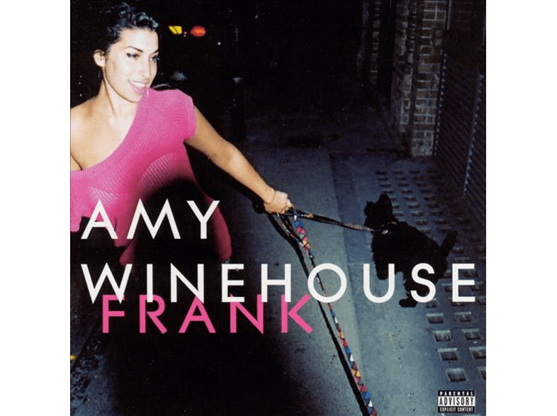

BIOGRAFIA DE AMY WINEHOUSE
Quien fue?
Amy Winehouse fue una cantante y compositora británica nacida el 14 de septiembre de 1983. Conocida por su poderosa voz y su estilo que mezclaba soul, jazz y R&B, alcanzó la fama mundial con su álbum Back to Black (2006), que incluía éxitos como "Rehab" y "You Know I'm No Good". A lo largo de su carrera, luchó con problemas de adicción y salud mental. Falleció el 23 de julio de 2011 a los 27 años debido a una intoxicación por alcohol.
Los inicios en el mundo de la musica
Amy Winehouse comenzó su carrera musical en Londres, firmando con Island Records en 2002. Su álbum debut, Frank (2003), mostró su talento en el jazz y soul, recibiendo gran reconocimiento.
- Album Frank

El amor, artifice de su adiccion
Amy Winehouse tuvo una relación turbulenta con Blake Fielder-Civil , quien influyó en su adicción a las drogas y el alcohol. Sus problemas de dependencia afectaron su carrera y salud, llevándola a varias recaídas y dificultades personales.

Amy en sus ultimos dias
En sus últimos días, Amy Winehouse luchó contra su adicción y su salud deteriorada. Falleció el 23 de julio de 2011 por intoxicación alcohólica. Su legado perdura a través de su música, influenciando a artistas y dejando un impacto en el soul, jazz y R&B modernos.